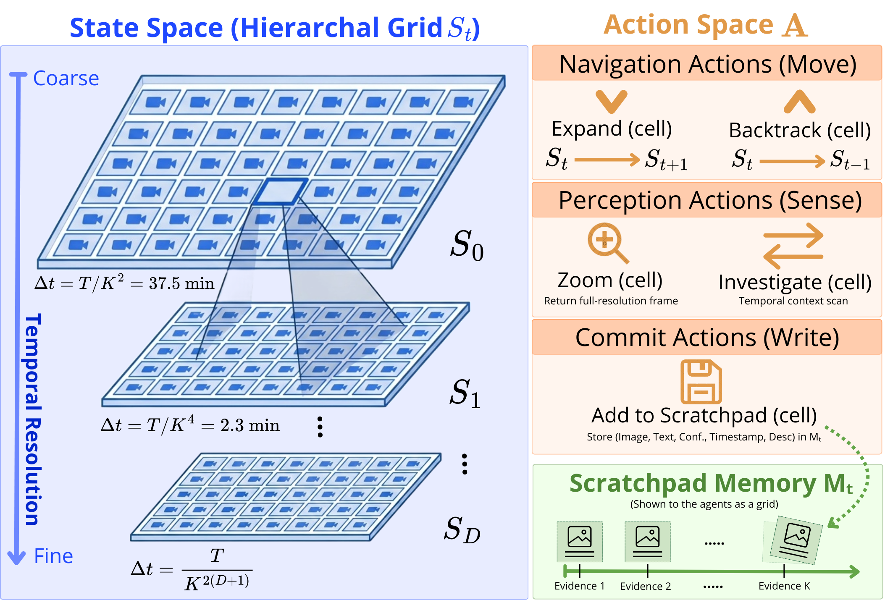
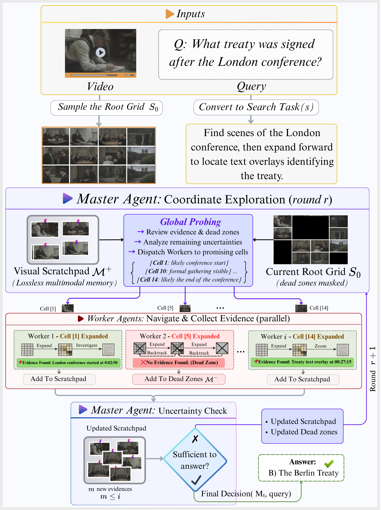
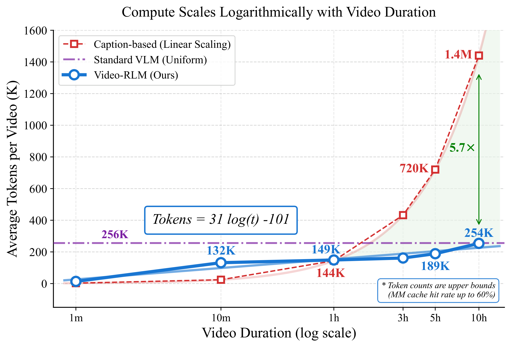
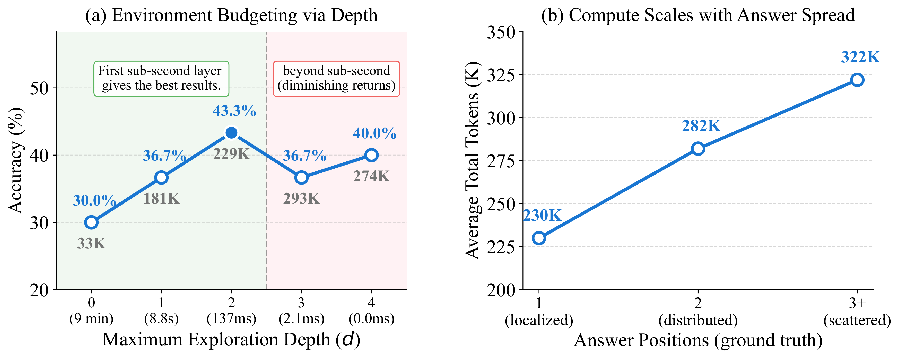
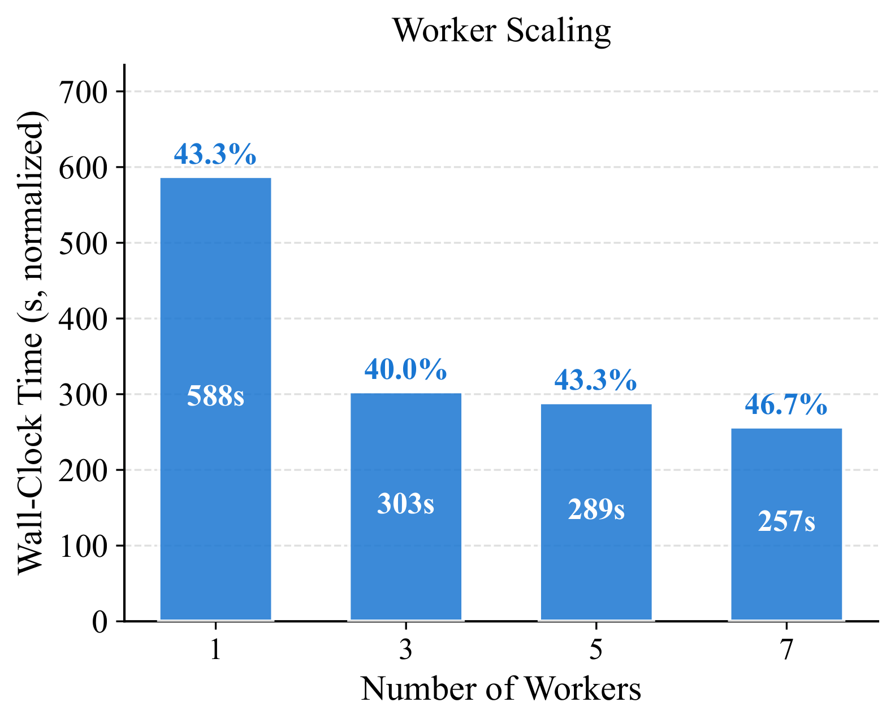

Extending language models to video introduces two challenges: representation, where existing methods rely on lossy approximations such as uniform sampling, and long-context, where caption- or agent-based pipelines collapse video into text and lose visual fidelity. To overcome this, we introduce VideoAtlas, a task-agnostic environment to represent video as a hierarchical grid that is simultaneously lossless, navigable, scalable, caption- and preprocessing-free. An overview of the video is available at a glance, and any region can be recursively zoomed into, with the same visual representation used uniformly for the video, intermediate investigations, and the agent's memory, eliminating lossy text conversion end-to-end. This hierarchical structure ensures access depth grows only logarithmically with video length.
For long-context, Recursive Language Models (RLMs) recently offered a powerful solution for long text, but extending them to visual domain requires a structured environment to recurse into, which VideoAtlas provides. VideoAtlas as a Markov Decision Process unlocks Video-RLM: a parallel Master-Worker architecture where a Master coordinates global exploration while Workers concurrently drill into assigned regions to accumulate lossless visual evidence.
We demonstrate three key findings: (1) logarithmic compute growth with video duration, in contrast to the linear cost of baselines, further amplified by a 30–60% multimodal cache hit rate arising from the grid's structural reuse. (2) Environment budgeting, where bounding the maximum exploration depth provides a principled compute-accuracy hyperparameter. (3) Emergent adaptive compute allocation that scales with question granularity. When scaling from 1-hour to 10-hour benchmarks, Video-RLM remains the most duration-robust method with minimal accuracy degradation while baselines degrade significantly, demonstrating that structured environment navigation is a viable and scalable paradigm for video understanding.

The VideoAtlas Environment. (Left) The state space is a hierarchical grid stack where deeper levels provide finer temporal resolution. (Top Right) Discrete action space for navigation and perception. (Bottom Right) The visual scratchpad memory accumulates multimodal evidence across exploration rounds.

Video-RLM overview. The Master examines the root grid and scratchpad, assigning promising cells to Workers. Workers autonomously explore their assigned regions via navigation and perception. The Master then performs uncertainty analysis to decide if evidence is sufficient to answer the query.
Watch how Video-RLM navigates the hierarchical grid to pinpoint specific events within long-form videos.
Football Match Analysis
Frieren Anime Episode
John Wick Movie Scene
Narrator Position
Desert Landscape
Documentary Movie

Logarithmic compute scaling with video duration. Video-RLM's hierarchical grid grows sub-linearly (O(log T)), requiring up to 9.7× fewer effective tokens than linear-scaling baselines. A uniform VLM maxes out its context trading off sampled frame count with resolution.

Left: Environment budgeting — accuracy and tokens vs. max depth on LVB-10hr. Green marks the optimal depth (first sub-second layer). Right: Adaptive compute — average tokens scale with evidence spread without ground-truth supervision.

Worker scaling. Wall-clock time (normalized) vs. number of workers on LVB-10hr. Accuracy remains stable across all configurations while throughput improves 2.25× from 1 to 7 workers.
@misc{eltahir2026videoatlasnavigatinglongformvideo,
title={VideoAtlas: Navigating Long-Form Video in Logarithmic Compute},
author={Mohamed Eltahir and Ali Habibullah and Yazan Alshoibi and Lama Ayash and Tanveer Hussain and Naeemullah Khan},
year={2026},
eprint={2603.17948},
archivePrefix={arXiv},
primaryClass={cs.CV},
url={https://arxiv.org/abs/2603.17948},
}